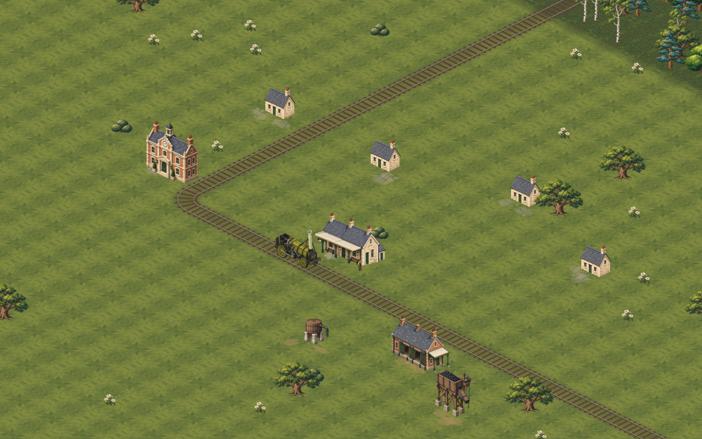
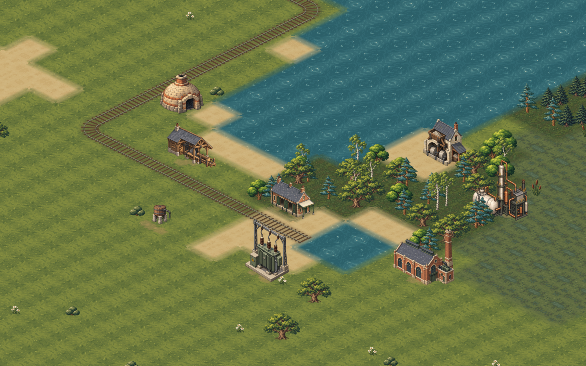
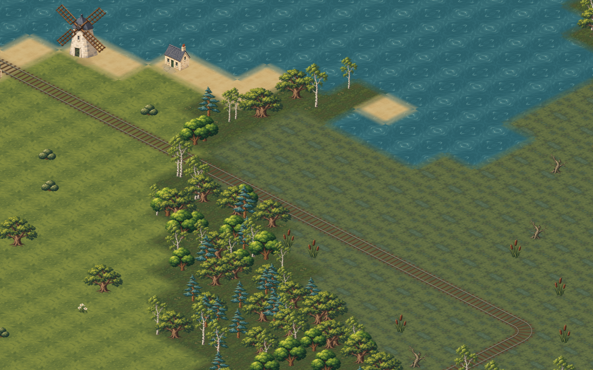
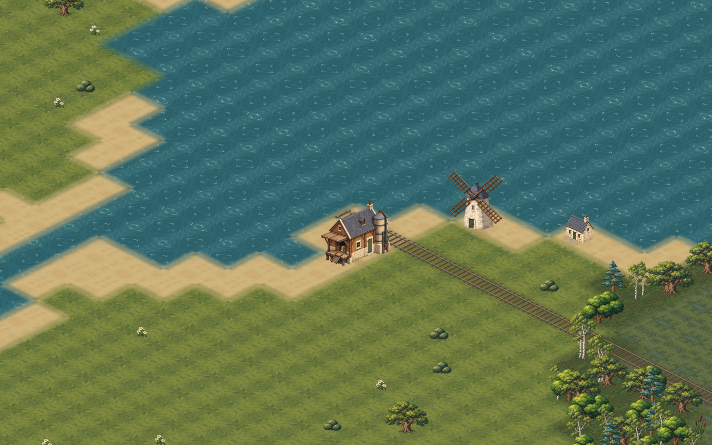
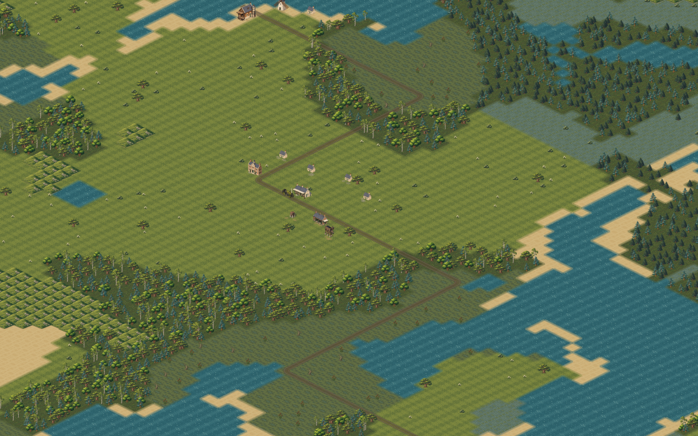
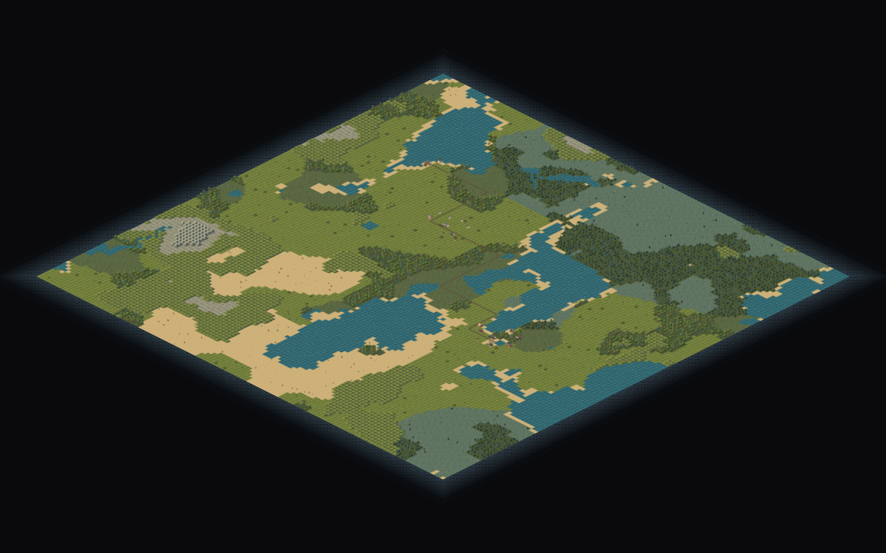

TEREPASZTAL / GENERATED WORLD / V2Small ground patches. Rails that belong to the landscape.
One normally generated 128 × 128 map · Seed 7412 · Six actual game screenshots.
Town station · small ground patches
Industry · terrain at the building bases
Rails blending with their underlying tiles
Farm halt · natural vegetation
Railway through the generated landscape
Generated 128 × 128 map
Generated terrain data is preserved. Construction and preview material rendering are documented in the review notes.